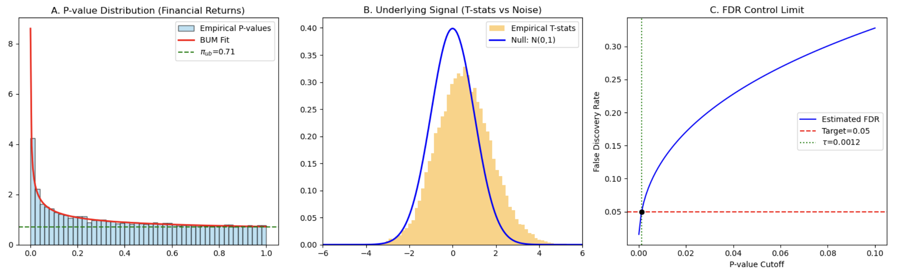

Nonparametric Estimation of False Discovery Rate
← Back to Projects
Research Focus
Research on high-dimensional data analysis and multiple hypothesis testing, centered on the Beta-Uniform Mixture (BUM) model and FDR control under diverse data structures. Contributed to literature review, statistical hypothesis construction, experimental design, code replication and result validation.
Analytical Pipeline
Built an end-to-end Python pipeline for data cleaning, hypothesis testing, p-value generation, BUM model fitting, FDR threshold selection and visualization. Applied t-tests, chi-square independence tests, Mann–Whitney U tests, fixed-effect models and grand-mean contrasts.
Applications & Findings
Extended the model to global stock portfolios, 71 cryptocurrencies, 450,000 Amazon reviews and SECOM semiconductor data with 590 process variables. Identified 77 abnormal market weeks and 30 failure-correlated process variables at the 5% target FDR level.
Robustness & Validation
Analyzed sensitivity to cluster count, variable encoding and anomaly scoring. Evaluated sample-level fault detection with conformal p-values, PCA T² and SPE statistics, and co-authored the research paper in LaTeX.